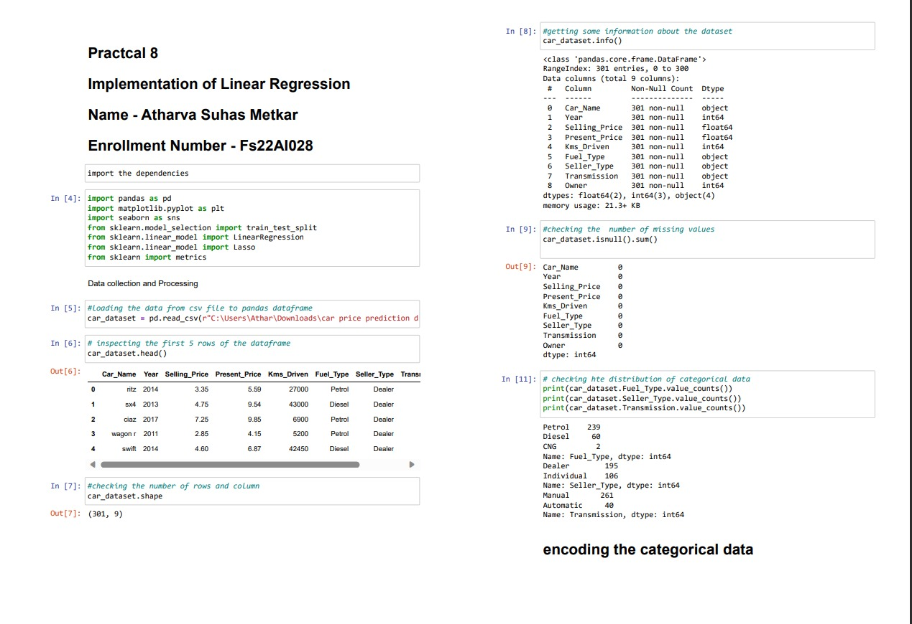
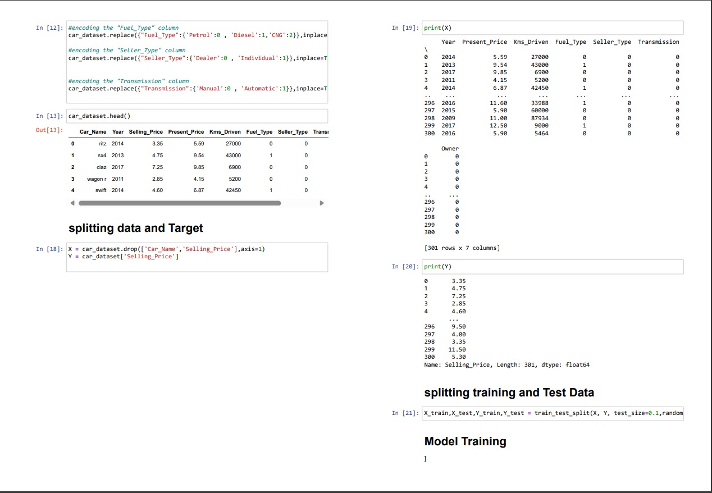
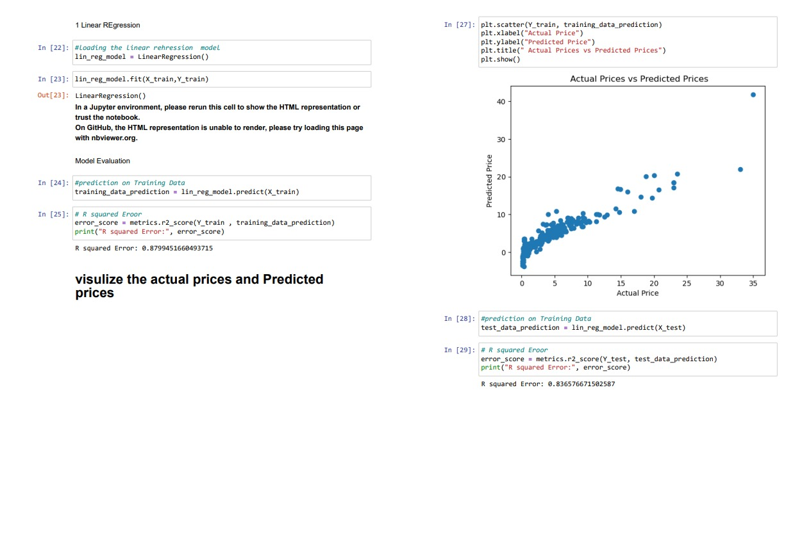
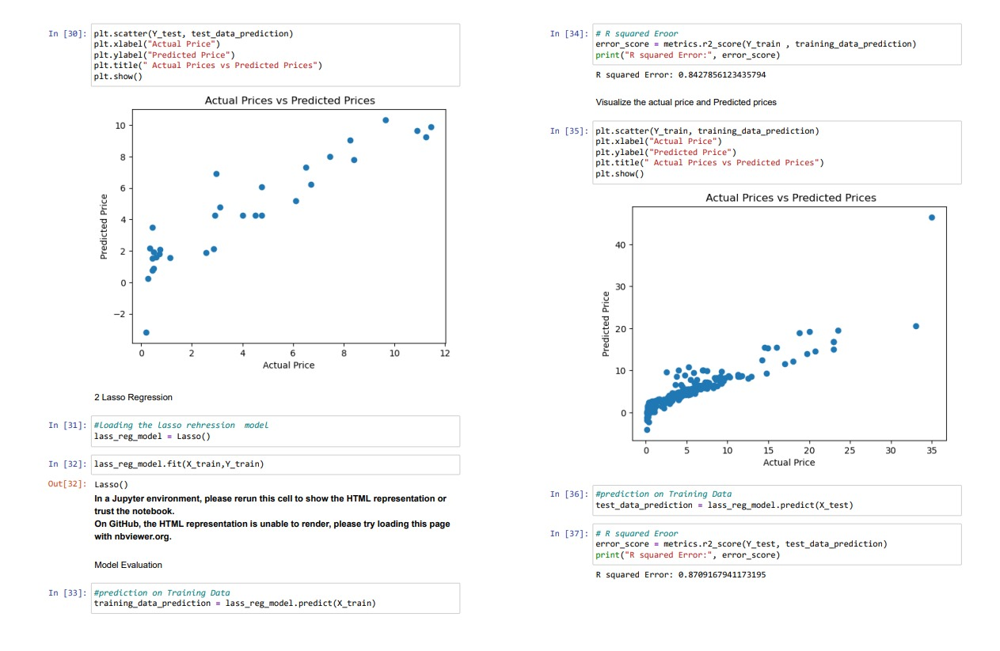
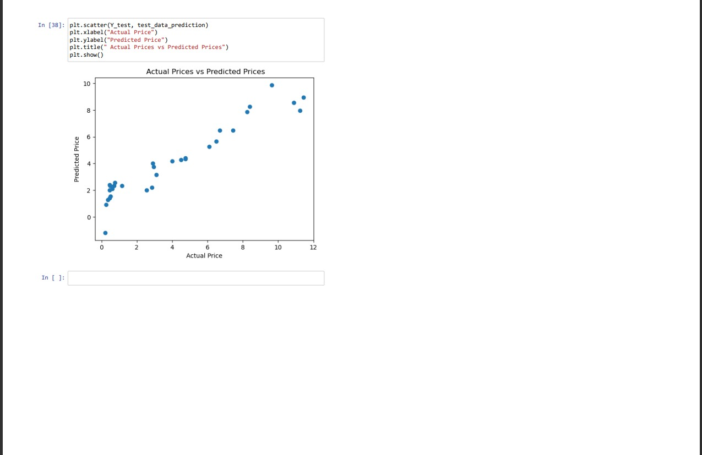

This project demonstrates the use of linear regression to predict car prices based on features such as mileage, age, brand, and more. The goal was to create a model that helps sellers and buyers make informed decisions about the fair market value of used cars.





The screenshots above illustrate the step-by-step implementation of the project, including data preprocessing, training, evaluation metrics, and results visualization. These steps showcase the accuracy and interpretability of the model.